What it does
You give it a voice track. It works out which mouth shape belongs on every frame, shows you the result as an exposure sheet you can correct by hand, and writes the mouths out in whatever form your animation tool wants.
It is one HTML file. Open it in a browser and it works — no install, no account, no server. The audio never leaves the page.
Typical jobs it is built for:
- a stop-motion puppet or minifigure that needs a mouth for each frame
- a 2D character in After Effects, Blender, Spine or a game engine
- a talking head in Final Cut Pro, cut over real footage
- a two-hander conversation split into lines, each with its own mouth
Getting started
- Open
lip-sync-generator.htmlin Chrome, Edge, Safari or Firefox. Double-clicking the file works; so does serving it. - Drop a voice recording onto the Preview panel.
- Wait a second or two — the exposure sheet fills in.
- Press Space to watch it.
- Go to the Export tab and take whichever format you need.
Drop a WAV, press play, export the Chart + exposure sheet. You get nine transparent PNGs and a JSON/CSV timing list, which is enough to drive almost any animation tool.
The window
Three strips, top to bottom: the title bar, the working deck (preview on the left, exposure sheet on the right), and the tabbed controls.
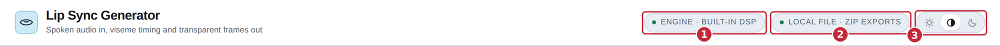
- Engine — which analyser is running. Built-in DSP by default.
- Source — where the file came from and how exports will be handed back. Local file · ZIP exports is the normal case.
- Appearance — light, match the system, or dark. It sticks between visits.
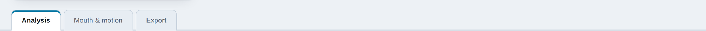
Everything above the tabs stays on screen whichever tab you are in, so you can scrub the clip while you adjust a setting.
Loading a clip
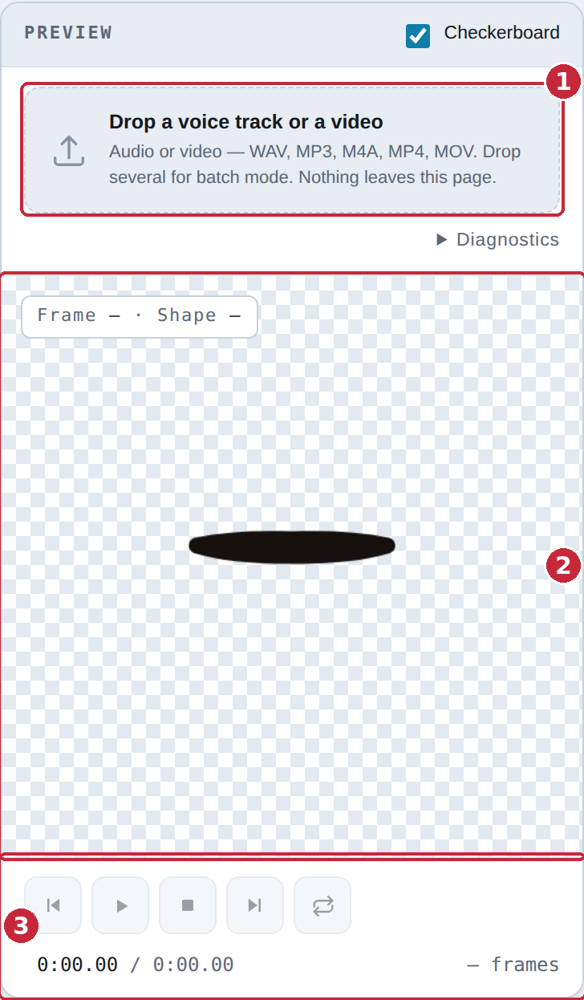
- Drop area — drag a file here, or click to browse. WAV, MP3, M4A, OGG, FLAC, AAC, MP4, MOV, WebM. Drop several at once to start a queue.
- Stage — where the mouth is drawn, over a checkerboard so you can see the transparency. With a video loaded, the mouth sits over the picture.
- Transport — play, stop and scrub. Greyed out until a clip is in.
A video file is treated the same way: the soundtrack is analysed and the picture becomes the backdrop, so you can place the mouth exactly where the face is. If the browser cannot decode the picture, the audio still works and a note says so.
Analysis
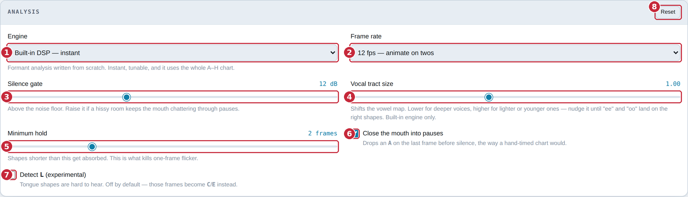
- Engine — Built-in DSP is formant analysis written from scratch: instant, tunable, and it uses the whole A–H chart. Rhubarb is the PocketSphinx-based analyser, slower and less tunable, included for comparison.
- Frame rate — the rate your animation runs at. 12 fps (“on twos”) is the usual choice for character animation; 24, 25 and 30 are there for film and video. Set this before you start hand-editing, since changing it re-times everything.
- Silence gate — how far above the noise floor counts as speech. Raise it if a hissy room keeps the mouth chattering through pauses.
- Vocal tract size — shifts the vowel map. Lower for deeper voices, higher for lighter or younger ones. Nudge it until “ee” and “oo” land on the right shapes. Built-in engine only.
- Minimum hold — shapes shorter than this get absorbed into their neighbours. This is the control that kills one-frame flicker.
- Close the mouth into pauses — drops an
Aon the last frame before silence, the way a hand-timed chart would. On by default. - Detect L — tongue shapes are genuinely hard to hear, so this is off
by default and those frames become
CorEinstead. Turn it on and check the result. - Reset — puts every analysis setting back to its default.
If the mouth flaps during silence, raise the silence gate. If it flickers during speech, raise the minimum hold. If the vowels are simply wrong — “oo” coming out as “ah” — that is vocal tract size.
Preview & transport
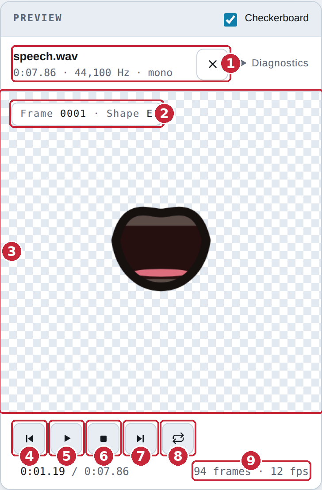
- The loaded file — name, length, sample rate and channels. The × clears it. Diagnostics beside it opens a technical readout you can copy if something needs reporting.
- Frame and shape — which frame the playhead is on and which mouth shape is showing.
- Stage — the mouth, drawn at the current frame. Click a cell in the Chart to preview any shape here.
- Jump to the start — also Home.
- Play / pause — also Space.
- Stop — stops and rewinds.
- Jump to the end — also End. Lands one frame short of the very end, because seeking to the last instant leaves most browsers showing black.
- Loop — plays the clip round and round. Respects a trim.
- Frame count — how many frames the clip is at the current rate.
The exposure sheet
This is the working document: one cell per frame, coloured and lettered by mouth shape, with the waveform above it.
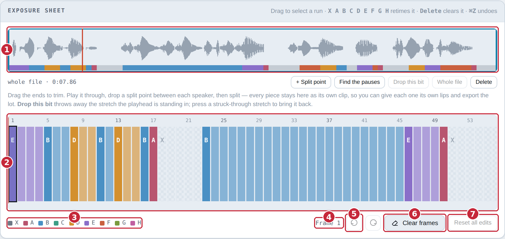
- Waveform — the whole clip at a glance, with the shapes as a colour band underneath. Press anywhere to seek. It is also where trimming and splitting happen — see Trim, split & drop.
- The sheet — one cell per frame. Drag across it to select a run. Scrolls sideways on a long clip.
- Legend — which colour is which shape.
- Selection — what is selected right now, in frames and seconds.
- Undo / redo — also ⌘Z and ⇧⌘Z (Ctrl on Windows).
- Clear frames — empties the selected frames back to rest.
- Reset all edits — throws away every hand edit and returns to the raw analysis.
The nine shapes
The Preston Blair set, which is also what Rhubarb writes. Every export ships all nine PNGs even if the take only used five, so you can correct a frame later without exporting again.
| Key | Shape | Sounds |
|---|---|---|
| X | Rest | silence |
| A | Closed | M, B, P |
| B | Slightly open | S, T, D, K, N, R, and “ee” |
| C | Open | “eh”, “ae” |
| D | Wide open | “aa” |
| E | Rounded | “o”, “aw”, “er” |
| F | Puckered | “oo”, W |
| G | Teeth on lip | F, V |
| H | Tongue | L |
Fixing frames by hand
The analyser gets most of it. The last five per cent is yours:
- Drag across the sheet to select the frames you want to change.
- Press the letter of the shape you want — A…H, or X for rest. The whole selection changes.
- Delete clears a selection back to rest.
- ⌘Z undoes.
Hand edits survive everything except Reset all edits: they are kept when you change the frame rate, switch to another clip and back, or trim.
Trim, split & drop
All of this happens on the sheet's own waveform. It draws the whole source file, with the part you are keeping boxed and anything discarded shaded and struck through — so a piece you have cut off is still on screen and can be brought back.
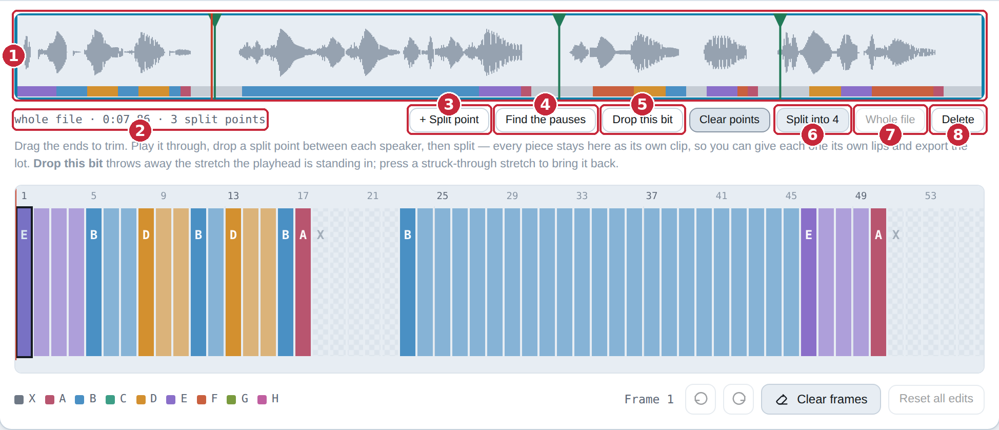
- The waveform — drag either end to trim. Press anywhere else to seek. The green flags along the top are split points: drag a flag to move it, press and release without moving to take it off.
- Readout — what is kept, out of how long, and how many split points are down.
- + Split point — puts a split point where the playhead is.
- Find the pauses — puts one in every pause the analyser found. This is usually the whole job on a conversation.
- Drop this bit — throws away the stretch the playhead is standing in, bounded by the split points either side. The audio is genuinely removed and everything after it moves earlier. Press the struck-through stretch to bring it back.
- Split into N — cuts at every split point at once. Each piece becomes its own clip in the queue, sharing the same source file.
- Whole file — undoes the trim and restores every dropped stretch.
- Delete — removes this clip.
Load the recording, press Find the pauses, check the flags are in the right gaps, then Split. You get one clip per line. Now give the first speaker their mouth and press Every other clip (see below), then do the same from the second clip.
Split points are marked first and cut all at once on purpose. Cutting immediately at the playhead would mean hunting for the right piece before you could place the next cut.
Working on several clips
Drop several files, or split one, and a queue appears in the Preview panel. Only one clip is open at a time; the rest keep their own edits, placement and mouth until you come back to them.
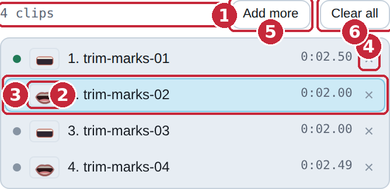
- Count — how many clips are loaded.
- Lips — the mouth that clip will be drawn with. This is what lets you see at a glance that two speakers are alternating.
- The open clip — highlighted. Click any row to open it.
- × — takes that clip out of the queue.
- Add more — adds files to the queue.
- Clear all — empties it.
Shared across the queue: the engine, the frame rate and the analysis settings. Per clip: the frames and hand edits, the mouth style, the placement, the keyframes, the blur patch and the script.
Mouth style
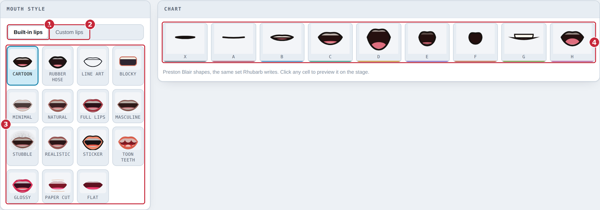
- Built-in lips — fifteen drawn styles, from a plain line to a rendered mouth.
- Custom lips — sets of pictures, either shipped with the app or added for this visit. See below.
- The styles — click one to use it. With a queue up it applies to the open clip only.
- Chart — all nine shapes in the current style. Click a cell to preview it on the stage.
Different lips per clip
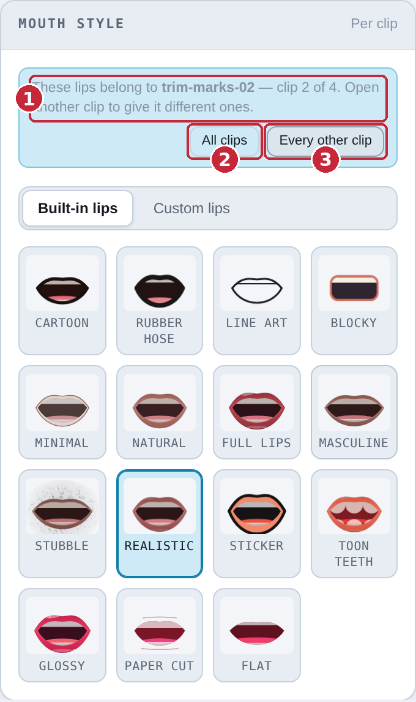
- Whose lips these are — the picker belongs to the clip that is open. Open another clip to give it different ones.
- All clips — give every clip in the queue these lips.
- Every other clip — give them to this clip and every second one after it. This is the two-speakers-taking-turns case that splitting on the pauses produces.
Your own lips
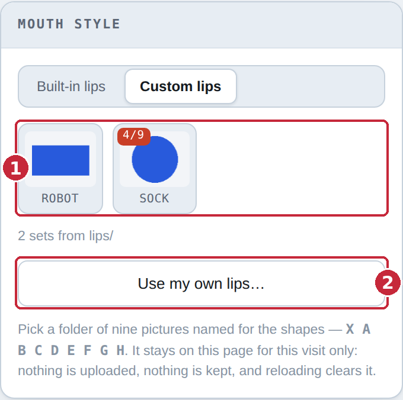
- The sets — anything found in a
lips/folder beside the HTML file when the page loaded, plus anything you have added this visit. A set showing 7/9 is missing shapes; the drawn style fills the gaps. - Use my own lips… — pick a folder of nine pictures named for the
shapes:
X A B C D E F G H. It stays on this page for this visit only. Nothing is uploaded, nothing is stored, and reloading clears it.
To have sets appear for everyone automatically, put them in a
lips/ folder next to the HTML file — one sub-folder per set, nine
pictures inside each, named for the shapes. They are found on load. This only
works when the page is served over HTTP; opening the file directly from disk
blocks the folder scan, and the Use my own lips… button is the way in.
Placing the mouth
With a video loaded, the mouth is placed directly on the picture.
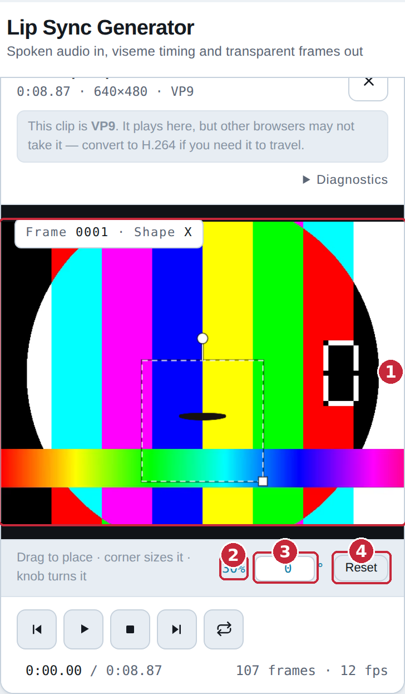
- The stage — drag the mouth to move it, drag the corner to size it, and drag the knob to turn it. Hold Shift while turning to snap to 15°.
- Size — as a percentage of the frame.
- Angle — type an exact number of degrees if you would rather.
- Reset — back to the centre at the default size, square on.
The placement is baked into the exported pictures. A Final Cut project or a frame sequence drops onto your timeline at 100% and lands exactly where the preview showed it — no transform needed at the other end.
Blur patch & keyframes
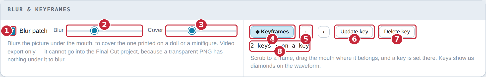
- Blur patch — blurs the picture underneath the mouth, to cover the one printed on a doll or a minifigure.
- Blur — how strong.
- Cover — how much area it covers.
- Keyframes — turns keyframing on, so the mouth can follow a moving shot.
- ‹ › — jump to the previous or next key.
- Set key — puts a key at the current frame.
- Delete key — removes the key you are standing on.
- Count — how many keys are down.
With keyframes on, scrub to a frame and drag the mouth where it belongs — a key is set there automatically. Keys show as diamonds on the waveform, and they are anchored to time, so changing the frame rate or trimming the clip leaves them where they were.
The blur patch and keyframed motion are baked into Video with mouth overlay only. They cannot go into the Final Cut project, because a transparent PNG has nothing underneath it to blur — and animating a position is something Final Cut does well, on a clip you can see.
Script
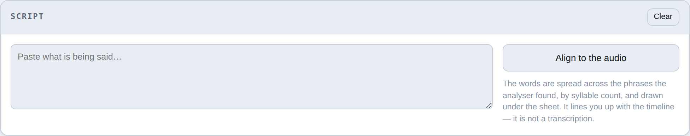
Paste what is being said and press Align to the audio. The words are spread across the phrases the analyser found, by syllable count, and drawn under the sheet.
It is a way of finding your place on a long clip — “this is the bit where she says the name” — not a transcription, and not something the analysis uses.
Exporting
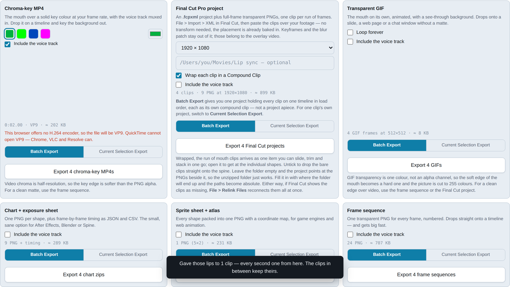
Every format is a card, and every card carries its own options and its own button. Read the card, set what it offers, press the button at the bottom of it.
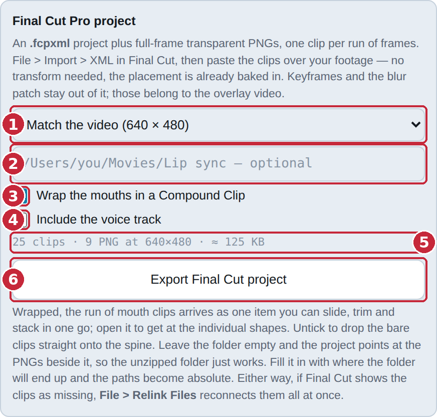
- Frame size — the timeline the project will be built for. “Match the video” appears when a video is loaded and is the right answer when you are cutting over that footage.
- Media folder — leave it empty and the project points at the pictures beside it, so the unzipped folder just works. Fill in where the folder will end up and the paths become absolute instead.
- Wrap … in a Compound Clip — the run of mouths arrives as one item you can slide, trim and stack, instead of dozens of one-frame pieces. Double-click it in Final Cut to get at the individual shapes, or Clip > Break Apart Clip Items to lay them out loose.
- Include the voice track — puts the audio in the zip beside the pictures. Off by default. Every card has its own.
- Estimate — roughly what you are about to get, before you commit.
- The button — does the export. It always says what it is about to do.
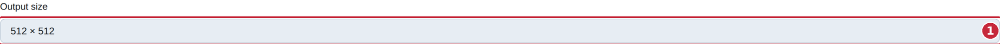
- Output size — the pixel size of the mouth pictures, used by the GIF, sprite sheet, frame sequence and chart exports. The Final Cut project, chroma-key MP4 and overlay video have their own size on their own cards, because those are frame sizes rather than mouth sizes.
The seven formats
| Format | You get | Good for |
|---|---|---|
| Chart + exposure sheet | Nine transparent PNGs plus frame-by-frame timing as JSON and CSV | After Effects, Blender, Spine — the small, sane option, and the one to reach for first |
| Final Cut Pro project | An .fcpxml project plus full-frame transparent PNGs, one
clip per run of frames |
Cutting over real footage in Final Cut. Import > XML and paste over your clip |
| Transparent GIF | An animated GIF with a see-through background | A slide, a web page, a chat window — anywhere without a matte |
| Sprite sheet + atlas | One PNG with all nine shapes packed in, plus a coordinate map | Game engines and web animation |
| Frame sequence | One numbered transparent PNG for every frame | Dropping straight onto a timeline. The cleanest matte — and it gets big fast |
| Chroma-key MP4 | The mouth over a solid key colour, voice track muxed in | Any editor that can key. Note the chroma is half-resolution, so the edge is softer than the PNG alpha |
| Video with mouth overlay | Your source video with the mouth burned into it | A finished clip in one step. The only export that carries the blur patch and keyframed motion |
Even if a take never uses G or H, those pictures
are in the zip. That is what lets you correct a frame in your editor a week
later without coming back here.
Batch export
With more than one clip loaded, every card grows a two-way switch.
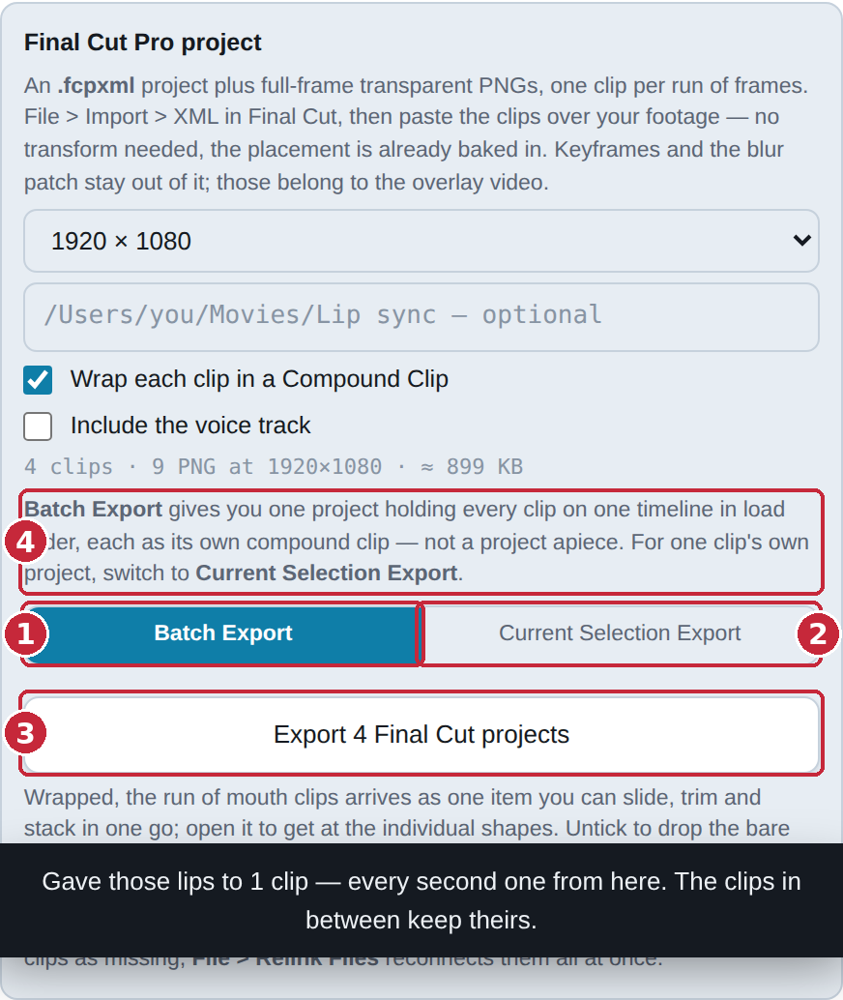
- Batch Export — runs this format across every clip in the queue, analysing any that have not been yet, and using each clip's own edits, placement and mouth.
- Current Selection Export — does the open clip only.
- The button — says which it is about to do, and how many.
- Card note — anything that differs between the two, spelled out.
Each card decides for itself, so you can batch the GIFs while pulling a single Final Cut project for the clip in front of you.
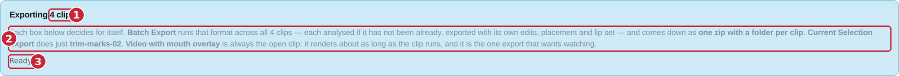
- Count — how many clips a batch will cover.
- What a batch does — including which clip “current selection” means right now.
- Status — progress during a run, and a Stop button beside it.
What a batch hands you
One download, a zip with a folder per clip inside it. Not one download per clip — a browser will only let a page start one download from a click, and the rest get dropped or blocked, which looks exactly like “only the first clip exported”.
Final Cut is the exception, because its batch output is naturally a single document: you get one project holding every clip on one timeline in load order, each as its own compound clip — not a project apiece. For one clip's own project, switch that card to Current Selection Export.
Video with mouth overlay is never batched. It renders roughly as long as the clip runs, so it stays on the open clip whatever the other cards say.
Stopping mid-run still gives you a zip of whatever finished.
Keyboard shortcuts
| Key | Does | Where |
|---|---|---|
| Space | Play / pause | anywhere* |
| Home | Jump to the start | anywhere* |
| End | Jump to the end | anywhere* |
| X A–H | Set the selected frames to that shape | exposure sheet |
| ← → | Move the selection a frame | exposure sheet |
| Shift + ← → | Extend the selection | exposure sheet |
| Delete | Clear the selection back to rest | exposure sheet |
| Esc | Collapse the selection to one frame | exposure sheet |
| ⌘A / Ctrl A | Select every frame | exposure sheet |
| ⌘Z / Ctrl Z | Undo | exposure sheet |
| ⇧⌘Z / Ctrl ⇧ Z | Redo | exposure sheet |
| ← → | Move between tabs | tab strip |
| Shift while turning | Snap the angle to 15° | stage |
* Not while a field, menu or button has focus — there, the key belongs to that control. Click an empty part of the page first and the transport keys come back.
Limits
| Clips in the queue | 24 |
| Length of a queued clip | 60 seconds |
| Size of one batch download | 600 MB |
These are stated up front rather than discovered. A clip past the length limit is flagged in the queue with a red dot and a note saying to work it on its own — the single-clip path has no limit, and it is always the fallback.
A batch that would come to more than 600 MB stops and says so, rather than handing the browser a file it cannot save. Frame sequences are the only export that gets anywhere near this; everything else is orders of magnitude under.
Troubleshooting
The mouth chatters through silence
Raise the silence gate. A hissy or roomy recording sits further above the noise floor than the analyser assumes.
It flickers between shapes during speech
Raise the minimum hold to 3 frames. Anything shorter gets absorbed.
The vowels are wrong
Vocal tract size. Lower it for a deep voice, raise it for a light one, until “ee” and “oo” land on the shapes you expect.
The batch only exported one clip
You are on an older build. A batch is one download now; if yours produces one zip per clip, the browser is blocking the rest.
Final Cut says the clips are missing
File > Relink Files, point it at the mouths folder, and
they all reconnect at once. Keeping the .fcpxml and its picture
folders together avoids it entirely.
The chroma-key edge is soft
Video chroma is half-resolution — that is the format, not the export. For a clean matte use the frame sequence or the Final Cut project, both of which carry real alpha.
The GIF's edges are hard and the colours are flat
GIF transparency is one colour, not an alpha channel, and the palette is 255 colours. For a soft edge over video, use the frame sequence.
My custom lips folder is not being found
The folder scan needs the page to be served over HTTP. Opened straight from disk, browsers block it. Use Use my own lips… instead, which works everywhere.
A video loads but shows no picture
The browser cannot decode that codec. The audio still analyses, and you can still export everything except the overlay video. Re-wrapping the clip as H.264 fixes it.
The page went unresponsive
Decoding a long video blocks the browser for a few seconds. There is a spinner that keeps turning through it — if you can see it turning, it has not crashed.
Privacy
Nothing is uploaded. There is no server, no account, no analytics and no network request for your media. The audio is decoded in the page, analysed in the page, and written back out by the page.
Custom lip sets you add with Use my own lips… live in memory for that
visit only: nothing is written to disk, nothing is stored in the browser, and
reloading clears them. Sets in a lips/ folder beside the file are
read from where they already are.
You can put the whole thing on a USB stick and use it on a machine with no network at all.